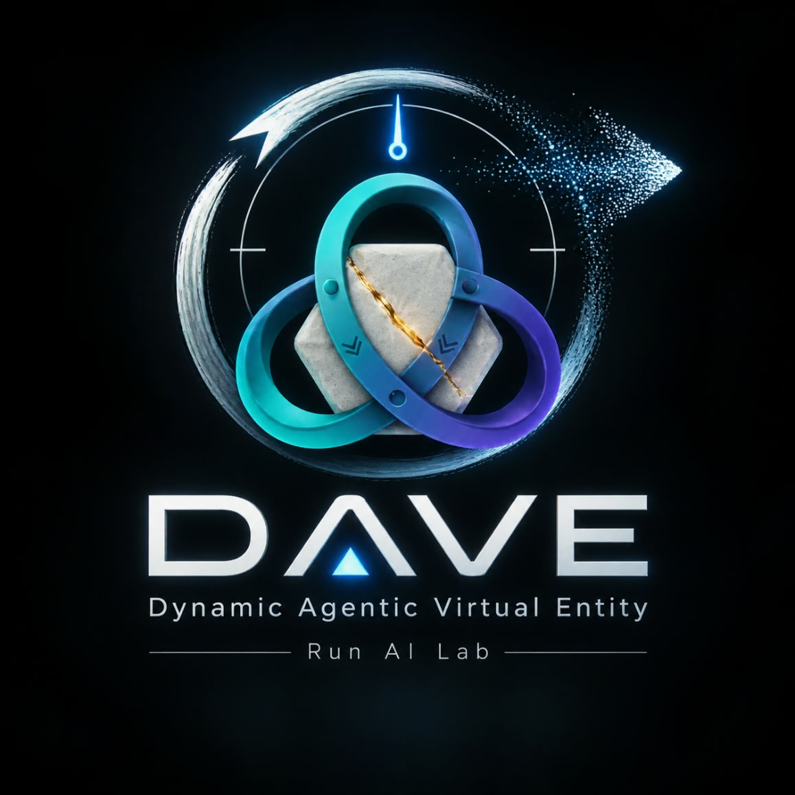

A durable, memory-backed Personal AI Chief of Staff — a multi-agent system that runs a single owner's operations with discretion, auditability, and control.
Request a pilotFinancial, public-facing, and destructive actions require explicit owner approval. Local-first. Discretion is structural, not promised.
We onboard a small number of founder-operators each month. KYC-led, read+draft first, hard lines before autonomy. If you run a business and want a chief of staff that never forgets — talk to us.
Start the conversation